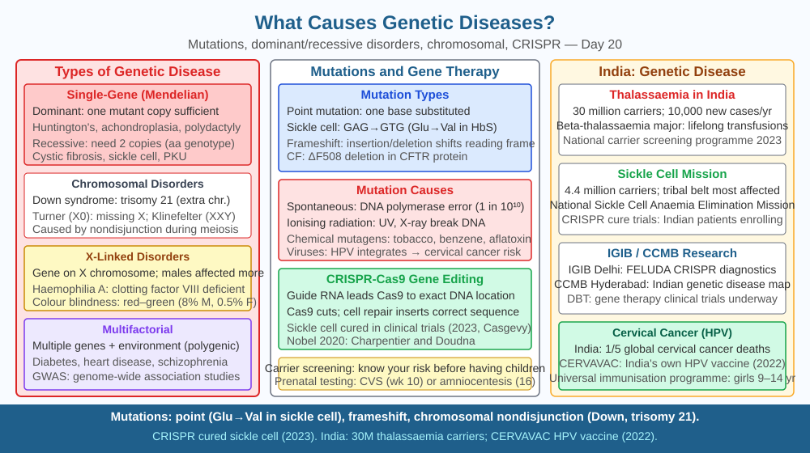

By the end of this lesson, you should be able to define mutation and explain how it disrupts protein function, distinguish between dominant and recessive inheritance with named examples, and use a Punnett square to calculate the 25% risk when two carriers of a recessive disease have children.
A baby is born with thick, sticky mucus clogging the lungs and digestive tract — cystic fibrosis. Both parents are completely healthy. A child in a tribal community in Odisha develops sickle-shaped red blood cells that block capillaries and cause episodes of agonising pain — sickle cell anaemia. A person in their 40s begins losing control of their movements and eventually their mind — Huntington's disease — even though their parent who had the disease managed to hide the symptoms until they were in their 50s. None of these people chose their condition, none caught it from another person, none developed it because of what they ate. The cause was written into their DNA at the moment of fertilisation. How does a change in a single gene — sometimes a change in just one DNA base out of three billion — produce such devastating consequences?
Mutations: errors in the genetic code
A mutation is a permanent change in the DNA base sequence. Mutations can arise spontaneously during DNA replication (when the copying machinery makes an error) or be triggered by mutagens — UV radiation, certain chemicals, X-rays. The main types are:
Alleles, dominant and recessive inheritance
Every gene exists in two copies (alleles), one on each homologous chromosome. The relationship between alleles determines whether a disease appears:
Recessive disease: Both alleles must be faulty for the disease to manifest. A person with one normal allele (A) and one faulty allele (a) is a carrier — they are phenotypically normal but can pass the faulty allele to children. Cystic fibrosis follows this pattern. In India, sickle cell anaemia is a major public health issue in tribal populations of Maharashtra, Chhattisgarh, and Odisha, also following autosomal recessive inheritance.
Dominant disease: One faulty allele is sufficient to cause disease, even when the other allele is normal. Huntington's disease is caused by a dominant mutation — an expanded CAG repeat in the HTT gene on chromosome 4. A person with even one copy of the expanded allele will develop the disease, usually between ages 30 and 50. Every child of an affected parent has a 50% chance of inheriting the faulty allele.
Codominant alleles: Both alleles are expressed simultaneously. In sickle cell anaemia, HbA (normal haemoglobin) and HbS (sickle haemoglobin) are codominant. A person with one HbA and one HbS allele (HbAS) shows the sickle cell trait — they are largely healthy but produce some sickle haemoglobin and are mildly protected against malaria. This is why the HbS allele is maintained at relatively high frequency in malaria-endemic regions: carriers have a survival advantage.
The Punnett square: predicting risk
When two carriers (each with genotype Aa) have children, the Punnett square shows all possible combinations:
A (carrier parent 1) a (carrier parent 1)
A AA (unaffected) Aa (carrier)
(parent 2)
a Aa (carrier) aa (AFFECTED)
(parent 2)
The ratios are: 1 AA (unaffected, non-carrier) : 2 Aa (carriers) : 1 aa (affected). Each pregnancy has a 25% (1 in 4) chance of producing an affected child, a 50% chance of a carrier, and a 25% chance of a completely unaffected non-carrier. This ratio holds independently for every pregnancy — if the first child is affected, the second still has a 25% risk.
Chromosomal disorders: errors in chromosome number
Some genetic diseases arise not from a mutation in a single gene but from having the wrong number of chromosomes. Down syndrome is caused by trisomy 21 — the presence of three copies of chromosome 21 instead of two, usually from failure of homologous chromosomes to separate during meiosis (called non-disjunction). The extra chromosome disrupts the dosage of hundreds of genes simultaneously, affecting development of the face, brain, heart, and immune system. Down syndrome affects approximately 1 in 800 live births and is the most common chromosomal disorder worldwide.
From gene to disease: the causal chain
The unifying logic across all genetic diseases is: mutated or extra/missing gene → abnormal or absent protein → disrupted cell/tissue function → disease symptoms. In cystic fibrosis: CFTR mutation → non-functional chloride channel → thick mucus → blocked airways and repeated lung infections → progressive lung damage. In sickle cell anaemia: beta-globin mutation → misshapen haemoglobin → sickle-shaped red blood cells → vascular occlusion and haemolysis → pain crises and anaemia.
Think of a gene as a recipe in a cookbook. The protein it encodes is the dish. A mutation is a misprint in the recipe:
The included SVG has three panels. Panel 1 shows a DNA double helix with a single base change highlighted in red (point mutation), an arrow leading to an altered amino acid in a protein chain, and the protein misfolds — illustrating the gene → protein → disease pathway. Panel 2 shows a Punnett square for two Aa carriers, with the four boxes colour-coded: green (AA), yellow (Aa, ×2), red (aa), and the 1:2:1 ratio labelled. Panel 3 shows a karyotype schematic with three copies of chromosome 21 highlighted, labelled "Trisomy 21 — Down syndrome," alongside a normal karyotype with two copies for comparison.

Both parents in a family are healthy, but they are both carriers of sickle cell anaemia (genotype HbA HbS). They already have one child with sickle cell disease (HbS HbS) and one child with sickle cell trait (HbA HbS). They are expecting a third child.
Predict: What is the probability that the third child will have sickle cell disease? Does the fact that the first child already has the disease change this probability? Now consider: sickle cell trait (HbA HbS) carriers living in malaria-endemic regions of Odisha are healthier on average than HbA HbA individuals in the same region. Using what you know about codominance and natural selection (from Day 14), predict whether the HbS allele will increase or decrease in frequency in this population over many generations, and explain the mechanism.
What is the direct cause of most genetic diseases?
Correct answer: a
Why is understanding inheritance mechanisms more useful than just listing genetic diseases?
Correct answer: c
What would happen if both parents carry one copy of a recessive disease gene?
Correct answer: a
Explain today's concept to a younger student in 60 seconds without technical jargon. Then explain it again using the correct scientific vocabulary.
If both explanations describe the same mechanism, you have understood the concept rather than memorised it.
Huntington's disease has a peculiar feature: the age of onset gets earlier in successive generations, a phenomenon called anticipation. The mutation is an expanded CAG repeat in the HTT gene — the more repeats, the earlier the disease strikes. When the faulty allele is passed from father to child, the repeat region can expand further during sperm production. So a father who develops symptoms at 50 may have a child who develops symptoms at 40, and that child may have a child who develops symptoms at 30. The gene gets "worse" with each generation — the opposite of what you might expect from inheritance, where the same allele is passed on unchanged. This was only understood once scientists could read the actual DNA sequence of the mutation in 1993.
Genetic diseases arise when mutations or inherited faulty alleles disrupt the protein a gene encodes; dominant diseases (like Huntington's) require only one faulty allele while recessive diseases (like cystic fibrosis and sickle cell anaemia) require two — meaning two carrier parents (each Aa) face a 25% chance per pregnancy of an affected child (aa), as the Punnett square 1:2:1 ratio shows.